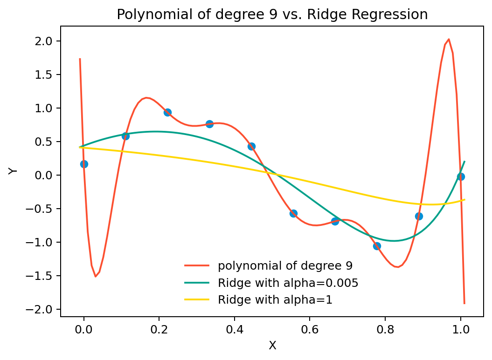
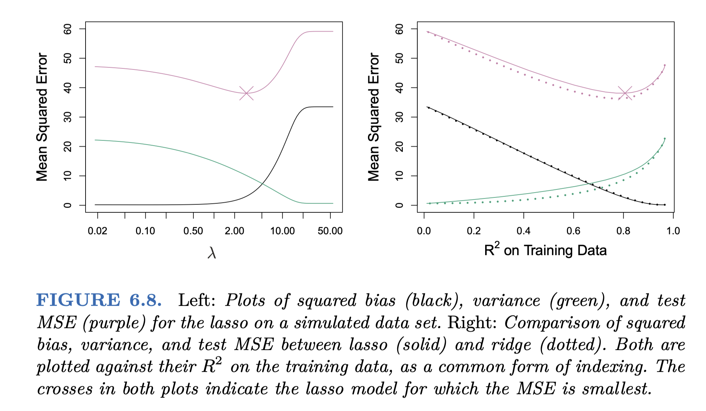

{kind=link}
{kind=link}
{kind=link}
{kind=link}

Regularization
An Introduction to Statistical Learning with Applications in Python by Gareth James, Daniela Witten, Trevor Hastie and Robert Tibshirani
\(Y = f(X) + \epsilon\)에서 무한히 많은/복잡한 \(f\)에 어떤 식으로든 제한을 줘서 regular behavior(규칙적, 틀을 갖춘)를 갖도록 하는데, 크게 2가지로 나누어 볼 수 있음
- \(f\)에 대한 파라메트릭 형태에 대한 제약을 가하거나; 가령, 앞서 다항식의 차수에 대한 제약
- \(f\)를 추정/학습하는 방식에 제약을 가하는 방법이 있음; regularization(규제)
함수 \(h(x) = sin(2\pi x)\)로부터 생성된 데이터셋(N=10)에 대해 다항식의 차수에 따른 flexibility의 변화에 따른 OLS 모델들을 비교하면,
Source: pp. 10-12, Deep Learning: Foundations and Concepts by Bishop, C. M. & Bishop, H
Shrinkage
- 예측변수에 대한 가정 혹은 변수를 선택을 하지 않고, 추정 계수가 너무 커지지 않도록 제약을 가하는 방법
- 이를 shrinkage/regularization(규제)이라고 하며,
- variance를 줄이는 효과가 있음
- 즉, overfitting을 줄여, (미래 데이터의) test error를 줄이는 효과가 있음. 즉 예측의 정확도를 높임
- 제약의 방식에 따라 일부 계수는 정확히 0으로 추정될 수 있음
- 변수 선택(variable/feature selection)도 가능
- 모델의 해석(interpertability)이 용이해짐
Note
Variance가 커지는 경우; overfitting
- 데이터에 비해 예측변수가 많을 때; \(p \gg n\)
- Y와 실제 관련없는 변수들이 많을 때; 노이즈에 fitting
OLS estimation에서는 \(\displaystyle RSS = \sum_{i=1}^{n} e_{i}^2\), \((e_i = y_i - \hat{y_i})\) 를 최소화시켰으나,
다음과 같이 shrinkage penalty를 추가하여 이를 최소화시키는 방법을 사용함
- Ridge regression (L2 regularization): \(\displaystyle \sum_{i=1}^{n} e_{i}^2 + \lambda\sum_{j=1}^{p} \beta_j^2\)
- Lasso regression (L1 regularization): \(\displaystyle \sum_{i=1}^{n} e_{i}^2 + \lambda\sum_{j=1}^{p} |\beta_j|\)
- Elastic net regression: ridge와 lasso regression을 결합
\(\lambda \geq 0\)는 shrinkage penalty의 크기를 결정하는 tuning parameter (hyper-parameter)
- 절편에 대해서는 shrinkage penalty를 적용하지 않음; 각 X와 Y간의 관계에 대해서만 shrink하길 기대
- \(\lambda = 0\)이면 OLS와 동일
- \(\lambda\)가 커질 수록 penalty의 상대적 중요도가 높아져 파라미터의 크기가 줄어듦; \(\beta_j \rightarrow 0\) as \(\lambda \rightarrow \infty\) (null model)
- 적절한 \(\lambda\)를 찾기 위해 cross-validation을 사용함
Important
- OLS estimation에서는 변수의 scaling에 대해서 계수가 그대로 변하는데 반해; 즉, \(X^{\prime} = c*X\)일 때, \(\displaystyle\hat{\beta}^{\prime} = \frac{1}{c} \hat{\beta}\)
- Regularization은 변수의 scaling에 매우 민감하며, 다른 변수들의 scale에도 영향을 받음
- 변수들을 표준화(standardization)해서 단위를 통일할 필요가 있음; \(\displaystyle\frac{X - \bar{X}}{s_X}\)
Ridge regression
\(\lambda\)가 커질수록 \(\beta\)의 \(l_2\) norm은 항상 줄어듦
- \(l_2\) norm: \(\displaystyle ||\beta||_2 = \sqrt{\sum_{j=1}^{p} \beta_j^2}\) : 벡터 \(\beta = (\beta_1, \beta_2, ..., \beta_p)\)의 길이
Source: p. 241, An Introduction to Statistical Learning by James, G., Witten, D., Hastie, T., & Tibshirani, R.
다음과 같이 이상적이지 못한 경우에 regularization를 통해 적절한 bias-variance trade-off를 찾을 수 있음.
- 에를 들어, 예측변수가 데이터에 비해 매우 많은 경우 (50개의 관측치에 45개의 예측변수)
- 즉, OLS에서 variance가 높은 경우에 특히 유용함
- 심지어, p > n인 경우에도 작동함
- 상대적으로 variance의 빠른 감소 효과 덕분에 (아래 그림), ridge regression은 OLS보다 더 좋은 예측 성능을 보임
- bias에 대한 약간의 손해를 보지만, variance에 대해서는 큰 이익을 얻어 정확한 예측(test error를 줄임) 가능
- 파라미터가 작아지지만, 0이 되지는 않아, 모델의 해석이 용이하지는 않음
- shrinkage penalty 부분으로 인한 estimation에 대한 계산량의 증가가 거의 없도록 알고리즘 개발; 매우 효율적
Source: p. 243, An Introduction to Statistical Learning by James, G., Witten, D., Hastie, T., & Tibshirani, R.
앞서 \(y = sin(2\pi x)\)로부터 생성된 데이터셋(N=10)에 대해 다항식의 차수에 따른 flexibility의 변화에 따른 OLS 모델과 Ridge regression 모델을 비교하면,
여기서 각각 \(\lambda = 0.005\), \(\lambda = 1\)
Lasso regression
\(\lambda\)가 커질수록 \(\beta\)의 \(l_1\) norm은 항상 줄어듦
- \(l_1\) norm: \(\displaystyle ||\beta||_1 = \sum_{j=1}^{p} |\beta_j|\)
Ridge와는 달리 파라미터가 0이 될 수 있음: 변수 선택(variable/feature selection)이 가능함
이는 변수가 많은 경우 파라미터 해석을 용이하게 함
- \(\lambda\) 값에 따라 임의의 갯수의 변수를 포함할 수 있음
{kind=link}
Source: p. 245, An Introduction to Statistical Learning by James, G., Witten, D., Hastie, T., & Tibshirani, R.
Ridge와 마찬가지로 bias에 대한 약간의 손해를 보지만, variance에 대해서는 큰 이익을 얻어 정확한 예측(test error를 줄임) 가능
그림 6.5와 동일한 데이터셋 (p = 45, n = 50)

{kind=link}
Source: p. 248, An Introduction to Statistical Learning by James, G., Witten, D., Hastie, T., & Tibshirani, R.
Ridge vs. Lasso
Ridge
- 모든 변수를 포함하기 때문에(극히 작은 파라미터값을 포함) 종종 파라미터를 해석하기 어려워짐
- 모든 예측변수들이 골고루 Y와 관련이 있을 때 높은 예측성능을 보임
- 즉, 예측변수들이 비슷한 효과를 가질 때
- 그림 6.8의 오른편에서 variance가 상대적으로 낮게 나타남.
- 실제로 45개의 예측변수가 모두 Y와 관련되도록 생성된 데이터셋임.
- 모든 계수들이 비슷한 “비율”로 줄어듬
Lasso
- 일부 계수가 0이 되어 변수 선택이 가능하며, 따라서 해석이 용이해짐
- 예측변수들 중 일부만이 Y와 관련이 있을 때 높은 예측성능을 보임
- 즉, 상대적으로 소수의 예측변수들만이 큰 효과를 가질 때
- 그림 6.9의 오른편에서 bias가 크게 작으며, variance도 낮음; 즉 모든 면에서 더 좋은 성능을 보임
- 실제로 45개의 예측변수 중 2개만이 Y와 관련되도록 생성된 데이터셋임.
- 모든 계수들이 비슷한 “크기”로 줄어듬; 작은 계수들은 0이 될 수 있음
{kind=link}
Source: p. 249, An Introduction to Statistical Learning by James, G., Witten, D., Hastie, T., & Tibshirani, R.
현실에서는 변수들 간의 true relationship을 미리 알 수 없으므로,
적절한 모델의 선택과 \(\lambda\)를 찾기 위해 cross-validation을 사용함
{kind=link}
Linear model selection
앞서 shrinkage 방식으로 variance을 감소시키는 방법을 다루었는데, variance를 줄이는 다른 접근 방식이 있음.
- Subset Selection: 예측변수들 중 Y와 연관되어 있다고 생각되는 변수들을 선택해 변수의 수를 줄이는 방법
- 설명력이 높은 조합의 변수들을 걸러내는 여러 방법이 있음
- 어떤 기준으로 계산하느냐에 따라 결과가 달라질 수 있음
- 많은 계산량이 필요하며, 변수의 수가 많을 때는 적용하기 어려움
- Best Subset Selection, Forward Stepwise Selection, Backward Stepwise Selection
- Dimension Reduction: 예측변수들의 선형 조합으로 새로운 변수들을 얻어(설명 변량의 큰 손실없이) 변수의 갯수를 줄이고자 함
- Principal Component Analysis (PCA); unsupervised learning
- Partial Least Squares (PLS); supervised learning
- 이 외에도 다양한 방법이 있음;
{kind=link}